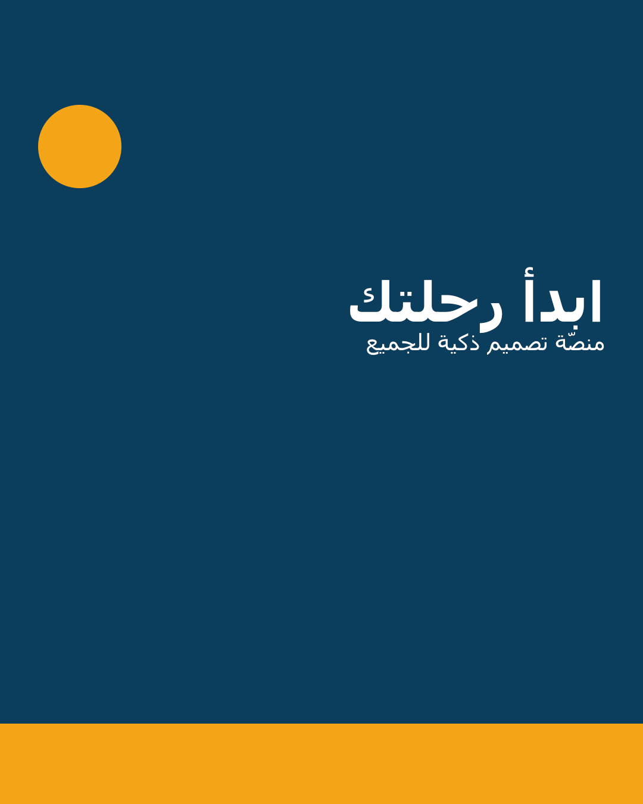
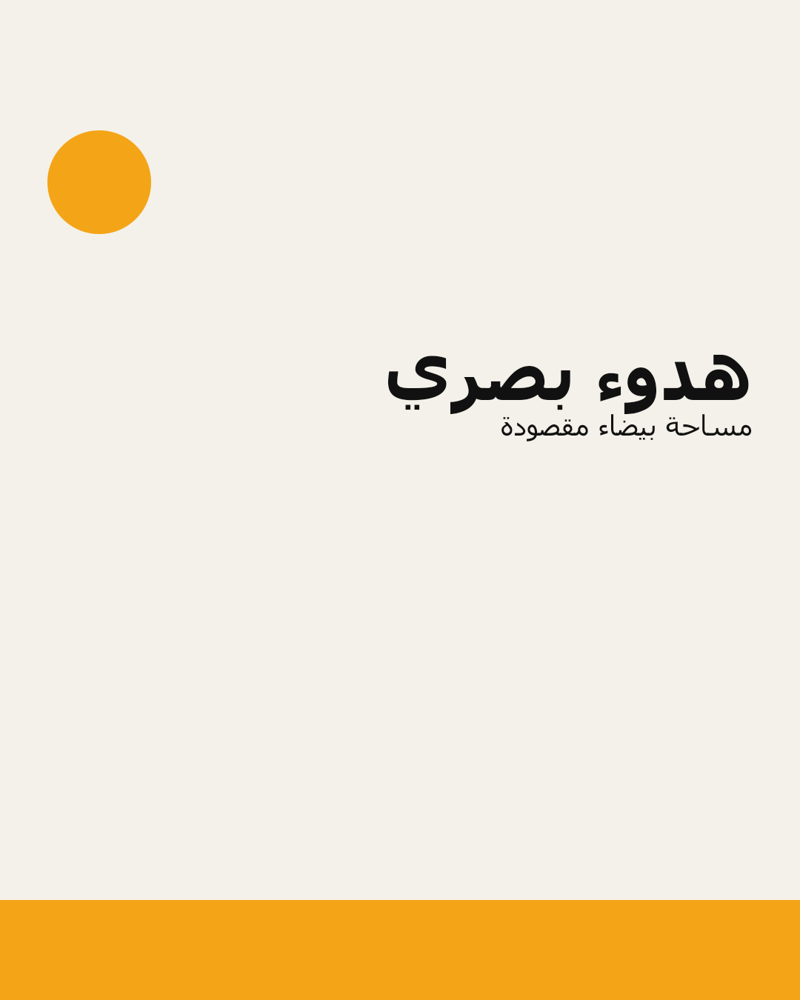
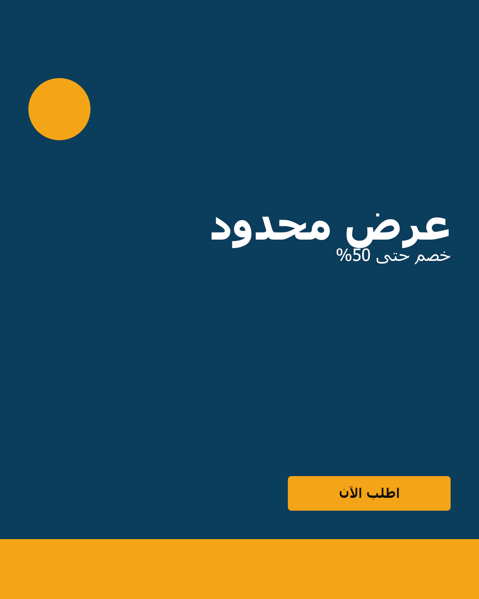

جارٍ التوليد…
وكيل تصميم يعمل بالقياس، لا بالتخمين
فهم الوصف · مراجع تصميمية · المعرفة · التصدير حسب البرنامج · محرّك خارجي
افتراضيًا: ٠ مفتاح · كل شيء محلي. المفتاح يُخزٍّن في localStorage ويُرسل للمزوّد الذي تختاره فقط. يدعم كذلك Ollama وأي خدمة متوافقة مع OpenAI عبر «نقطة نهاية مخصّصة».
حلّل وصفك الحرّ إلى موجز منظَّم، راجع الحقول وعدّلها، ثم «اعتمد الموجز» — ما له مقابل في التصميم يُطبَّق، وما لا مقابل له يبقى مرجعًا للمفاهيم.
كل مفهوم يغيّر التكوين والنمط والزخرفة والباليتة معًا، ومبرره يربطه بجمهور وهدف موجزك — لا بذوق عام.
توليد المفاهيم بالذكاء الاصطناعي اختياري ويظهر عند حفظ مفتاح في «فهم الوصف» — بدونه تعمل الأداة كاملة محليًا.
اقتراحات من القياس الحالي ونوع التصميم وموجزك: اعتمَد محورًا محورًا أو «الكل»، وعدّل أي قيمة قبل الإنشاء — لا شيء يُنشأ بلا أمرك.
اختر مرجعًا مُجرٍّبًا: يضبط النوع والتكوين والباليتة وزن الخط دفعة واحدة.
مكتبتي البصرية — مراجعك الخاصة (محلي ١٠٠٪)الصورة تُصغَّر إلى ٦٤٠ بكسل وتُحفظ في متصفحك فقط — لا رفع لأي خادم. نظّمها بوسوم ومجموعة ثم استدعِها بالبحث.
المُحلّل بالرؤية مساره Gemini ويحتاج مفتاحًا محفوظًا محليًا (اختياري في «فهم الوصف»). بلا مفتاح تبقى بقيّة المكتبة تعمل كاملة محليًا.
نتائج حقيقية من Openverse (أرشيف صور مرخّصة تجاريًا: Flickr · Wikimedia · StockSnap · …) بلا مفتاح وبلا حساب. كل نتيجة تعرض الرخصة واسم المُصوِّر ورابط المصدر؛ زر «استخدمها في الإطار» ينزّل الصورة إلى تصميمك ويخزّنها محليًا كما لو رفعتها من جهازك. بلا اتصال تظهر رسالة صريحة ولا تُخترع أي نتيجة.
رمز QR داخل التصميمالفيديو يُسجٍّل بالوقت الفعلي من نفس المحرك (VP9/WebM) بمقدّم ثابت وتلاشٍ ناعم بين الشرائح بالدقة الكاملة — مناسب لعرض كاروسيل متحرّك أو ريلز قصير بلا أي خادم. خطة المحتوى تخرج Markdown جاهزًا للنشر، والشرائح PNG تخرج مع manifest يرتّبها. إطار الصورة ورمز QR يُحفظان محليًا في المتصفح ويبقان بعد إعادة التحميل؛ الصورة تُصغَّر إلى ١٤٠٠ بكسل وتُضمَّن في كل مخرج (SVG/PNG/PDF/PSD).
PDF صفحة بنفس نسب التصميم بخط مضمّن داخل الملف · PSD طبقة لكل عنصر (يُفتح في PhotoCraft/Photoshop قابلًا للتعديل) · GIF تلاشٍ ناعم بين شرائح الكاروسيل — كلها مبنيّة على مكتبات مفتوحة المصدر مُنزَّلة محليًا في vendor/ بلا أي نداء شبكة.
كل حزمة تحتوي: مانيفست الطبقات (أسامٍ، ترتيب، نص، خط، لون) + SVG بمجموعة لكل طبقة + دليل استيراد داخل البرنامج. الفريمات (المقاس/الإطارات/المدة) موثّقة في نفس الخطة.
العقد المتوقع: POST {prompt, width, height} ويُعيد {image_url} أو {url} أو {images:[{url}]}. شغّل freefield محليًا (ComfyUI على GPU مفتوح الأوزان) ثم وجّه الرابط هنا لتوليد صورة من الوصف نفسه.
نفس المخطّط والقياسات، منفّذ عبر محرّك PhotoCraft مع ملفات مصدر قابلة للتعديل.



تعطٍّل الاختصار أثناء الكتابة في أي حقل.